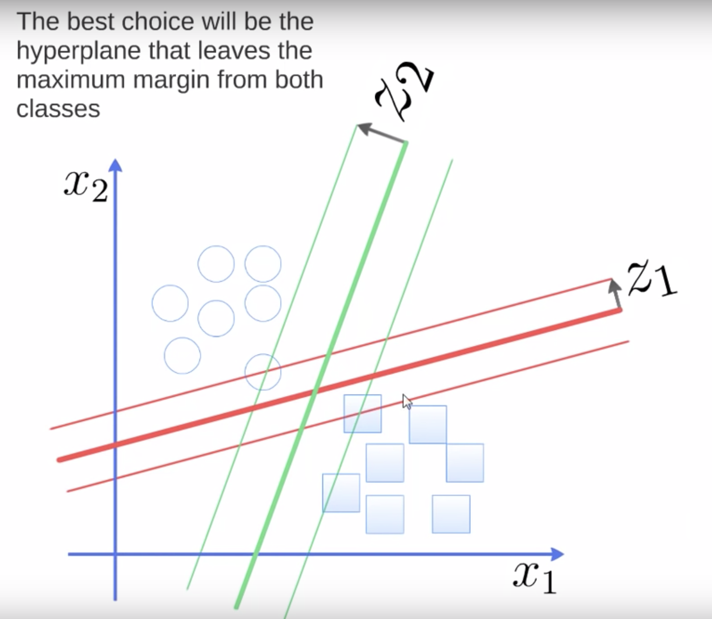
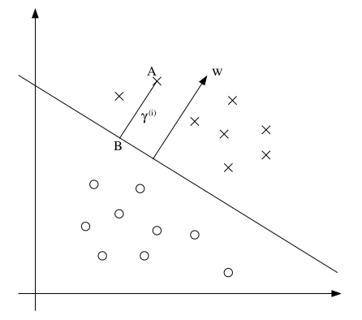

- Notation
- Functional Margin
- Geometric Margin
- Functional and Geometric Margin
- Optimal Margin Classifier
The Support Vector Machine allows you to find potential non-linear decision boundaries:

SVM provides an algorithm that:
- Maps a vector of features to a vector of features of a much higher dimension (manually picking the new features is difficult, that is why we automate it with these types of algorithms) \begin{align} \begin{bmatrix} x_1 \\ x_2 \\ \end{bmatrix} \rightarrow \begin{bmatrix} x_1 \\ x_2 \\ x_1^2 \\ x_2^2 \\ x_1\cdot x_2 \\ \vdots \end{bmatrix} \end{align}
- Applies a linear classifier over the high dimensional features (Note: if you apply logistic regression to high dimensional vectors then it can learn non-linear decision boundaries)
- Labels: \(y^{(i)} \in \{-1, +1\}\)
- Now the hypothesis outputs a \(1\) or a \(-1\), which means:
That is, now instead of a smooth transition of probabilities from zero to one, we have a hard transition between \(1\) and \(-1\).
- Weights: now the weights \(\Theta \in \mathbb{R}^{(n+1)}\), where \(\theta_0 = 1\) are divided into: \(w \in \mathbb{R}^{(n)}\) and \(b \in \mathbb{R}\). Thus we drop the convention of assigning \(x_0 = 1\).
- Also now the hypothesis function is defined as: \(h_{w,b}(x) = g(w^Tx + b) = g((\sum_{i=1}^n w_i x) + b)\)
The Functional Margin describes how accurately do we classify an example. For example, for binary classification, given an example x:
\begin{align} h_\Theta(x) = g(\Theta x) = \begin{cases} \text{ predict } 1 & \text{ if } \Theta^T x \geq 0, \text{ that is } h_\Theta(x)=g(\Theta x) \geq 0.5\\ \text{ predict } 0 & \text{ otherwise } \\ \end{cases} \end{align}Let's distinguish between the two cases when classifying an example \(x^{(i)}\):
- (1) If \(y^{(i)} = 1\), then we want \(h_\Theta(x) = g(\Theta x) \approx 1\), which means we want \(\Theta \cdot x >> 0\).
- (2) If \(y^{(i)} = 0\), then we want \(h_\Theta(x) = g(\Theta x) \approx 0\), which means we want \(\Theta \cdot x << 0\).
As we can see in the following graph, the bigger \(z = \Theta x\) the closer \(g(z)\) is to one and vice versa.

The functional margin of the hyperplane defined by \((w, b)\) with respect to the example \((x^{(i)}, y^{(i)})\) is defined as:
\begin{align} \hat{\gamma}^{(i)} = y^{(i)}(w^Tx^{(i)}+b) \end{align}So, if we modify slightly the two statements above and use the new notation for SVMs:
- If \(y^{(i)} = 1\), then we want \(w^T \cdot x + b >> 0\).
- If \(y^{(i)} = 0\), then we want \(w^T \cdot x + b << 0\).
The combination of these two declarations yields the definition of the functional margin. Why?, well:
- When \(y^{(i)}\) is positive, we want to have \(w^Tx^{(i)} + b >> 0\) by (1), so \(\hat{\gamma}^{(i)}\) will be large, because both values are positive
- When \(y^{(i)}\) is negative, we want to have \(w^Tx^{(i)} + b << 0\) by (2), so \(\hat{\gamma}^{(i)}\) will be large, because both values are negative
So, given an example \(x^{(i)}\), if \(\hat{\gamma}^{(i)} > 0\) that means either
- \(y^{(i)} = 1\) and \(w^Tx + b > 0\) or
- \(y^{(i)} = -1\) and \(w^Tx + b < 0\)
which shows that the classification is correct.
To evaluate the functional margin with respect to the training set we make use of the worst case notion:
\begin{align} \hat{\gamma} = \underset{i}{\min} \hat{\gamma}^{(i)} \end{align}That is, we evaluate how well we are doing in the worst example.
Note that the functional margin is very easy to cheat (to increase its value with any meaningful change to the decision boundary). Given our definition for \(g\):
\begin{align} g = \begin{cases} 1, & \text{ if } z \geq 0 \\ -1, & \text{ otherwise } \end{cases} \end{align}It follows that \(h_{w,b}(x^{(i)}) = g(2w^Tx^{(i)} + 2b) = g(w^Tx^{(i)} + b)\), because what matters is the sign, not the magnitude.
However, if you scale \(w\) and \(b\) by a factor of \(n\) where \(n\) is a positive number then \(\gamma \) increases because:
\begin{align} \hat{\gamma}^{(i)} = (w^Tx + b) \end{align}so,
\begin{align} n \cdot \hat{\gamma}^{(i)} = n \cdot (w^Tx + b) \end{align}where,
\begin{align} \hat{\gamma}^{(i)} < n \cdot \hat{\gamma}^{(i)} \end{align}One way to avoid this is to normalize the length of the parameters, that is either:
- Add a constraint where \(||w|| = 1\) or
- Set \((w, b)\) to be \((\frac{w}{||w||}, \frac{b}{||b||})\)
In both cases we are re-scaling the parameters.
First of all, let's assume we have a dataset that is linearly separable like:

Here we have two examples of two decision boundaries that do classify correctly all of the samples. However the red one looks worse than the green one.
That is because for the red one there are some examples that are very close to the boundary compared to the rest. Whereas for the green one there is a bigger separation.
So, first we define a line by the equation \(w^Tx + b = 0\), therefore:
- every example \(x\) that lies to the left of the line satisfies \(w^Tx + b < 0\) and
- every example \(x\) that lies to the right of the line satisfies \(w^Tx + b > 0\)
Furthermore the geometric margin with respect to a single example \((x^{(i)}, y^{(i)})\) is the euclidean distance between the point \((x^{(i)}, y^{(i)})\) and the line we have defined as \(w^Tx + b = 0\).
The decision boundary corresponding to (w, b) is shown, along with the vector w. Note that w is orthogonal (at 90º) to the separating hyperplane.

Consider the point at \(A\), which represents the example \(x^{(i)}\) with \(y^{(i)} = 1\). Its distance to the decision boundary, denoted by \(\gamma^{(i)}\), is given by the line segment \(AB\).
How do we find \(\gamma^{(i)}\):
- We know \(\frac{w}{||w||}\) is a unit length vector pointing to the same direction as \(w\).
- Also \(A = x^{(i)}\)
We also know that the vector between points \(A\) and \(B\) is defined like \(A - B\), in this scenario, \(A - B = \gamma^{(i)}\frac{w}{||w||}\), where \(\gamma^{(i)}\) is the length of the vector and \(\frac{w}{||w||}\) is the direction of the vector.
- Thus if we solve for \(B\), \(B = x^{(i)} - \gamma^{(i)}\frac{w}{||w||}\)
- Furthermore, \(B\) lies on the decision boundary, therefore:
Solving for \(y^{(i)}\) yields:
\begin{align} \gamma^{(i)} = \frac{w^Tx^{(i)} + b}{||w||} = \left(\frac{w}{||w||}\right)^Tx(i) + \frac{b}{||w||} \end{align}The geometric margin of the hyperplane \((w, b)\) with respect to \((x^{(i)}, y^{(i)})\) is defined as:
\begin{align} \gamma^{(i)} = \frac{w^T x^{(i)} + b}{||w||} \end{align}This is the definition for a positive example (\(y^{(i)} = 1\)), and measures the euclidean distance from the decision boundary to the example \((x^{(i)}, y^{(i)})\).
If we generalize, as to compute the geometric margin for both positive and negative examples:
\begin{align} \gamma^{(i)} = \frac{y^{(i)} (w^T x^{(i)} + b)}{||w||} \end{align}To evaluate the geometric margin with respect to the training set we make use of the worst case notion:
\begin{align} \gamma = \underset{i}{\min} \gamma^{(i)} \end{align}That is, we evaluate how well we are doing in the worst example.
As you may have picked up we can stablish an equality between both margins:
\begin{align} \gamma^{(i)} = \frac{\hat{\gamma}^{(i)}}{||w||} \end{align}We use this classifier to categorize datasets that are perfectly separable, that is to say, we use it over data that is linearly separable. This classifier will help us find the green line we saw in the geometric margin.
What the optimal margin classifier does is choose the parameters \(w, b\) that maximize \(\gamma\)
One way to solve this optimization problem is:
\begin{align} \underset{\gamma, w, b}{\max} \gamma \end{align}subject to
\begin{align} \frac{y^{(i)}(w^Tx + b)}{||w||} \geq \gamma \end{align}This will cause the maximization of the geometric margin with respect to the training set. The restriction means that we want to maximize \(\gamma\) while having every example have a geometric margin of at least \(\gamma\).
Because this is a non-convex problem, we will transform it. Given \(\gamma = \frac{\hat{\gamma}}{||w||}\), then \(\gamma \cdot ||w|| = \hat{\gamma}\), and so if we multiply in the subject both sides by \(||w||\):
\begin{align} \frac{y^{(i)}(w^Tx + b)}{||w||} \cdot ||w|| \geq \gamma \cdot ||w|| \Leftrightarrow y^{(i)}(w^Tx + b) \geq \hat{\gamma} \end{align}and the optimization problem can be re-written as:
\begin{align} \underset{\hat{\gamma}, w, b}{\max} \frac{\hat{\gamma}}{||w||} \end{align}subject to
\begin{align} y^{(i)}(w^Tx + b) \geq \hat{\gamma} \end{align}However, we are still stuck with a non-convex objective \(\frac{\hat{\gamma}}{||w||}\). Because, as we've said previously scaling the functional margin (changing the magnitude of \(w^Tx + b\)) does not change the decision boundary itself, we will add an scaling constraint that the functional margin of \(w, b\) with respect to the training set must be 1: \(\hat{\gamma} = 1\)
Observe, now, that maximizing \(\frac{\hat{\gamma}}{||w||} = \frac{1}{||w||}\) is like minimizing \(||w||^2\), we re-write the optimization problem as follows:
\begin{align} \underset{w, b}{\min} ||w||^2 \end{align}subject to
\begin{align} y^{(i)}(w^Tx + b) \geq 1 \end{align}